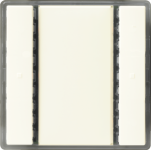
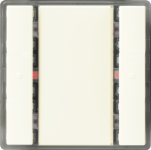
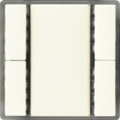
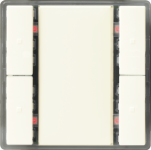
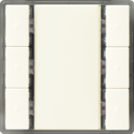
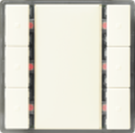
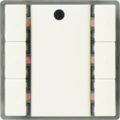

DELTA i-system 产品描述
Product description
DELTA i-system 的墙壁开关具有以下特征：
- Horizontally arranged button pairs
- Labeling field between the buttons
- Mounted together with the design frame “DELTA line”, “DELTA vita”, or “DELTA miro” onto a bus coupling unit (BTM)
- The electrical connection between the wall switch and the bus coupling unit (BTM) is established via the Bus Transceiver Interface (BTI).
- Horizontally aligned buttons may be used as a pair of buttons, or as single buttons. Single buttons can be used for sending values, single-button switching/dimming or single-button control of blinds.
 | UP 221/2, DELTA i-system 墙壁开关单
订单号：5WG1 221-2DB_2 下载数据表：5WG12212DB_2 |
 | UP 221/3, DELTA i-switch 单，状态为 LED
订单号：5WG1 221-2DB_3 下载数据表：5WG12212DB_3 |
 | UP 222/2, DELTA i-system 双壁开关
订单号：5WG1 222-2DB_2 下载数据表：5WG12222DB_2 |
 | UP 222/3, DELTA i-system 墙壁开关双，状态为 LED
订单号：5WG1 222-2DB_3 下载数据表：5WG12222DB_3 |
 | UP 223/2, DELTA i-system 三重墙壁开关
订单号：5WG1 223-2DB_2 下载数据表：5WG12232DB_2 |
 | UP 223/3, DELTA i-system 三重墙壁开关，状态为 LED
订单号：5WG1 223-2DB_3 下载数据表：5WG12232DB_3 |
 | UP 223/5, DELTA i-system 三重墙壁开关，带场景控制器/IR 接收器解码器
订单号：5WG1 223-2DB_5 下载数据表：5WG12232DB_5 |